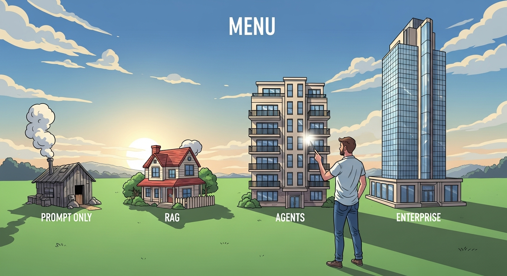

AI is transforming the economics of architectural decisions. Code can now be regenerated, refactored, and retranslated at lower cost than ever before. This means architecture is becoming less like poured concrete and more like a lease. The old fear was getting stuck. The new challenge is deciding how much reversibility is enough. Companies may legally own their code but functionally depend on an external layer of artificial understanding, creating cognitive lock-in: a new form of dependency where the ability to understand, refactor, and extend the system depends on specific AI models and tools.
With vibe-coding, AI becomes the primary reader and editor of code, not humans. This enables a new approach: Disposable Evidence-Driven Architecture. Architecture decisions become temporary, justified only by current evidence like tests, traces, and metrics. If data shows a new setup works better, the AI replaces the old one. The blueprint is not sacred; it is a temporary plan shaped by what works best right now. This shifts architecture from "design for permanence" to "design for evidence and easy replacement."
Choosing the right architecture requires all three disciplines collaborating on the decision: AI PM defines the requirements for latency, accuracy, cost, and trust that determine which architecture fits; Vibe-Coding spikes different architectural patterns to test which actually meet requirements before committing; AI Engineering evaluates technical constraints, infrastructure needs, and maintenance burden that determine whether an architecture is sustainable.

Use vibe coding for architecture spikes before committing to full implementation. Quickly assemble prototypes that test different architectural patterns: a simple prompt-based approach versus a RAG setup, a single-agent versus multi-agent design. Vibe coding architectural variants lets you feel the complexity and understand the real trade-offs before making expensive architectural decisions that are difficult to reverse.
When evaluating architecture choices, PMs should ask: What is the cost of being wrong about scale or complexity? How does this architecture affect time-to-market? What reliability guarantees matter to users? These questions should be posed during architecture reviews, not after decisions are made. Key decisions include whether to start simple and evolve versus building for scale upfront, and how human oversight requirements shape the architecture.
Objective: Learn the spectrum of AI product architectures from simple to complex, and understand how to select and evolve your architecture as your product grows.
Chapter Overview
This chapter presents reference architectures for AI products, organized from simplest to most complex. You will learn about the YAGNI principle applied to AI systems, copilot patterns with human-in-the-loop design, retrieval-augmented generation architectures, agentic workflow systems, multimodal architectures, and enterprise AI patterns including human oversight and compliance boundaries.
Four Questions This Chapter Answers
- What are we trying to learn? Which architecture pattern is appropriate for our AI product requirements, and how do we avoid over-engineering with unnecessary complexity.
- What is the fastest prototype that could teach it? Implementing the simplest viable architecture for your use case and stress-testing it before adding complexity.
- What would count as success or failure? An architecture that meets current requirements with room to evolve, versus one that is either inadequate or excessively complex.
- What engineering consequence follows from the result? Architecture decisions are expensive to reverse; starting simple and evolving based on evidence prevents the common failure of building elaborate systems for simple problems.
Learning Objectives
- Understand the full spectrum of AI product architectures
- Apply YAGNI principles to AI system design
- Match architectures to product requirements
- Design for human oversight and auditability
- Plan for architectural evolution as products scale